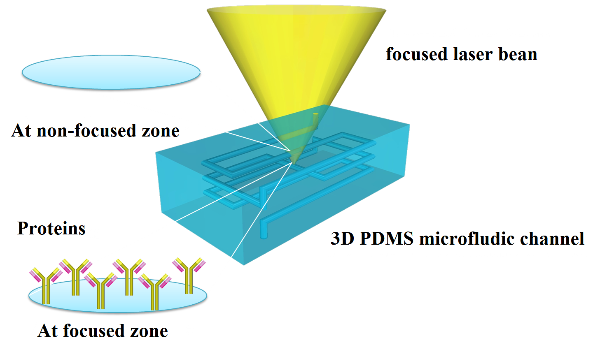
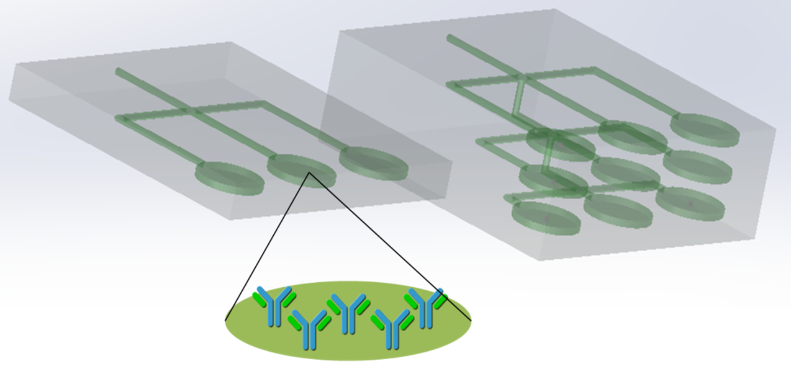

雷射輔助雙光子微流道先進製程
Laser-assisted nonlinear absorption for protein microfluidics fabrication
背景

Figure 1：研究方向示意圖。
在生醫領域上，將檢測過程中的取樣、混合、分離、反應與分析等過程整合在一可攜帶的體積內，則檢測過程可不必在有貴重儀器的實驗場所進行，這是所謂的micro total analysis system(μTAS)。 微流道(microfluidics)形式的微反應器(microreactor)，是μTAS的一種，微流道可用來運送且控制微量流體的流動，若再加以試劑分子，我們便有機會分析經過的流體與試劑分子的反應。 微流道結構分2D與3D兩種，雖然3D微流道比2D微流道難以製造，但在有限底面積下與試劑分子佔用體積下，3D微流道比2D微流道能容納較多試劑分子，以及較長的流道長度可促進相異流體的混合 。

Figure 2：3D微流道和2D微流道的比較。3D微流道可使用的反應空間較多，故能容納較多種蛋白質
微流道製程中常見的材料是聚二甲基矽氧烷(polydimethylsiloxane, PDMS)。 以PDMS製造3D微流道，可略分為兩種方式，一種是疊層製程(layer-by-layer process)，另一種是一次成形製程(one-step process)，前者是將不同的2D流層疊成3D微流道，這樣的製程需要製造的流層數隨流道複雜度增加，進而增加製造時間，而且相鄰流層間的對齊也是一個困難的問題， 此外，若流經的流體壓力太強，可能造成相鄰流層間產生裂痕。後者則不經過疊合，直接建構出3D的微流道，此方法沒有疊層製程的上述問題，但是比疊層製程的方法，較難以在製造時於PDMS內壁加入我們想要的試劑分子，例如抗體與酵素等蛋白質。
目的
一次成形製程比疊層製程較難以在製造過程中對3D PDMS微流道內壁做處理以加入蛋白質，而必須在整個3D PDMS微流道製造完後，從外面做處理；另一方面，3D PDMS微流道可能是很複雜的結構。 綜合以上原因，我們難以利用一般化學方法、電漿處理或一般的照光方式來將蛋白質固定於3D PDMS微流道的特定處。因此，我們希望藉由照光，讓進入3D PDMS微流道內的蛋白質溶液產生多光子吸收，進而產生光化學反應，讓蛋白質產生交聯(crosslinking)並固定在3D PDMS微流道的特定處。 一來採用照光的方式可直接穿透PDMS材料對微流道做處理，而且光可以集中以侷限光化學反應也就是蛋白質交聯的發生範圍； 二來若採用多光子吸收，只要能夠調控照光在3D微流道內的強度分布，可使得蛋白質交聯僅發生在照光強度夠強的地方。 若能這麼做，一來我們有機會在複雜的3D微流道內固定多種蛋白質，發揮3D微流道的優勢；二來因為微流道是一次成形製程，因此沒有上述疊層製程易遇到的問題。
方法
有些蛋白質可經光化學反應而產生交聯。光化學反應藉光子使電子從基態躍升至激發態，使反應得以進行。在兩個狀態之間，有虛擬能階(virtual state)，電子能在虛擬能階上存在短暫時間，若在此時限內，電子再吸收新光子的能量，便有機會躍升到更高的虛擬能階或直接進入激發態，否則便會回到基態，這是屬於多光子吸收 (multi-photon absorption)過程。因此，在多光子吸收過程，光化學反應是否有機會發生，視當電子處於虛擬能階的時間內，是否有新的光子能量補充，使電子往上躍升直到激發態；換言之，只有照光強度足夠時，電子才會進入激發態，引發後續的蛋白質交聯反應。因此，藉照光強度的控制，可將蛋白質的交聯侷限在微流道內的特定區域。 我們選擇固定的蛋白質是avidin，一來已有以照光做avidin交聯的先例，二來avidin可與經生物素(biotin)處理的蛋白質結合，使我們可在avidin之外結合我們想要的蛋白質做為試劑進行檢測。 假如我們的研究證實利用多光子吸收將avidin交聯固定於3D PDMS微流道內的特定處可行的話，則我們可以將蛋白質的選擇性放置(selective deposition)技術應用於一次成形的3D PDMS微流道中。
參考文獻
1. Lee, S. T. and Lee, S. Y. (2004) “Micro total analysis system (μ-TAS) in biotechnology” Applied Microbiology and Biotechnology 64 289-299. 2.Nguyen, N. T. and Wu, Z. (2005) “Micromixers-a review” Journal of Micromechanics and Microengineering 15 R1-R16. 3. McDonald, J. C.; Duffy, D. C.; Anderson, J. R.; Chiu, D. T.; Wu, H.; Schueller, O. J. A. and Whitesides, G. M. (2000)“Fabrication of microfluidic systems in poly(dimethylsiloxane)” Electrophoresis 21 27-40. 4. McDonald, J. C. and Whitesides, G. M. (2002)“Poly(dimethylsiloxane) as a material for fabricating microfluidic devcies” Account of Chemical Research 35 491-499. 5. Anderson, J. R.; Chiu, D. T.; Jackman, R. J.; Cherniavskaya, O.; McDonald, J. C.; Wu, H.; Whitesides, S. H. and Whitesides, G. M. (2000) “Fabrication of topologically complex three-dimensional microfluidic systems in PDMS by rapid prototyping” Analytical Chemistry 72 3158-3164. 6. Zhang, M.; Wu, J.; Wang, L.; Xiao, K. and Wen, W. (2010)“A simple method for fabricating multi-layer PDMS structures for 3D microfluidic chips” Lab on a Chip 10 1199-1203. 7. McDonald, J. C.; Chabinyc, M. L.; Metallo, S. J.; Anderson, J. R.; Stroock, A. D. and Whitesides, G. M. (2002)“Prototyping of microfluidic devices in poly(dimethylsiloxane) using solid-object printing” Analytical Chemistry 74 1537-1545. 8. Wu, H.; Odom, T. W.; Chiu, D. T. and Whitesides G. M. (2003)“Fabrication of complex three-dimensional microchannel systems in PDMS” Journal of the American Chemical Society 125 554-559. 9. Verma, M. K. S.; Majumder, A. and Ghatak, A. (2006) “Embedded template-assisted fabrication of complex microchannels in PDMS and design of a microfluidic adhesive” Langmuir 22 10291-10295. 10. Eddings, M. A.; Johnson, M. A. and Gale, B. K. (2008) “Determining the optimal PDMS-PDMS bonding technique for microfluidic deveces” Journal of Micromechanics and Microengineering 18 1-4. 11. Allen, R.; Nielson, R.; Wise, D. D. and Shear, J. B. “Catalytic three-dimensional protein architectures” Analytical Chemistry. 12. Kaerh, B.; Ertas, N.; Nielson, R.; Allen, R.; Hill, R. T.; Plenert, M. and Shear, J. B. (2006) “Direct-write fabrication of functional protein matrixes using a low-cost Q-switched laser” 78 3198-3202. 13. Iosin, M.; Scheul, T.; Nizak, C.; Stephan, O.; Astilean, S. and Baldeck, P. (2011) “Laser microstructuration of three-dimensional enzyme reactors in microfluidic channels” Microfluidics and Nanofluidics 10 685-690. 14. Bout, D. A. V. and Brodbelt, J. S. (2006) “Active three-dimensional protein microstructures”. 15. Diamandis, E. P. and Christopoulos, T. K. (1991)“The biotin-(strept)avidin system: principles and applications in biotechnology” Clinical Chemistry 37 625-636. 16. Chapman-Smith, A. and Jr Cronan, J. E. (1999)“Proteins: a post-translational modification of exceptional specificity” Trends in Biochemical Sciences 24 359-363.